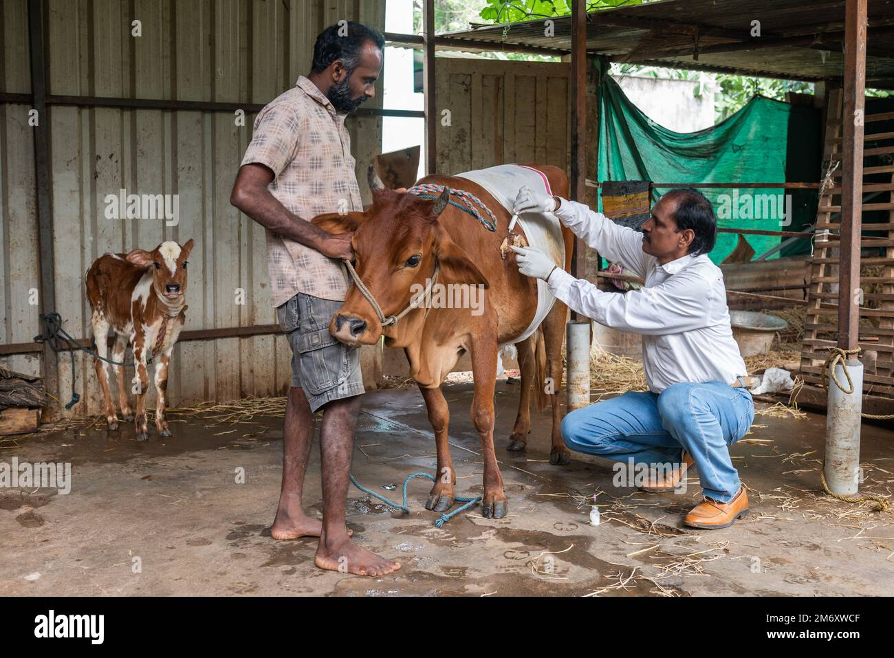
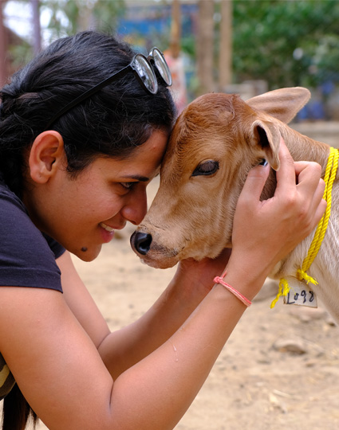

Our Purpose
Our Mission

To Provide Food & Shelter
Mahasangh is to care for stray, abandoned as well as all other Desi Cows & its offspring's by providing them fodder, shelter & clean water.

To Provide Medical Aid
Mahasang provide medical attention (treatment) and a place where they can get well from injuries and stay peacefully.

Education & Outreach
We offer programs and activities designed to promote awareness and understanding of the importance of cow protection and sustainable living.